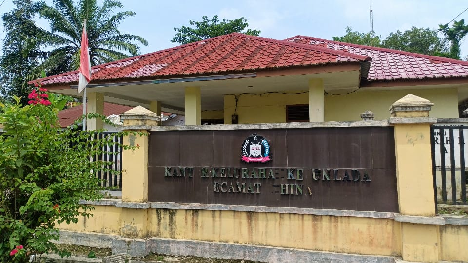
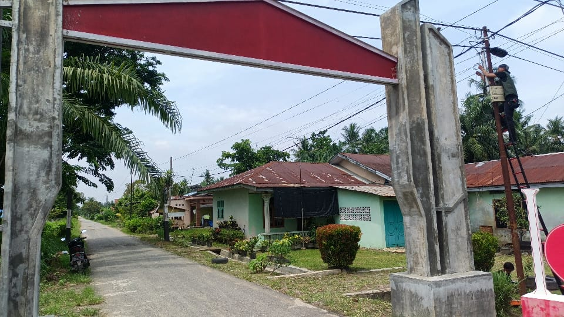
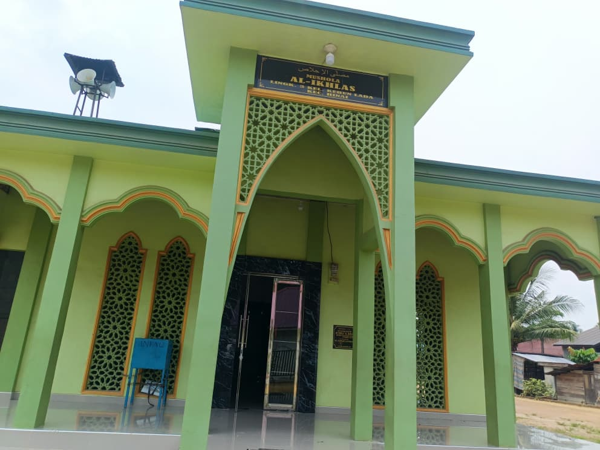
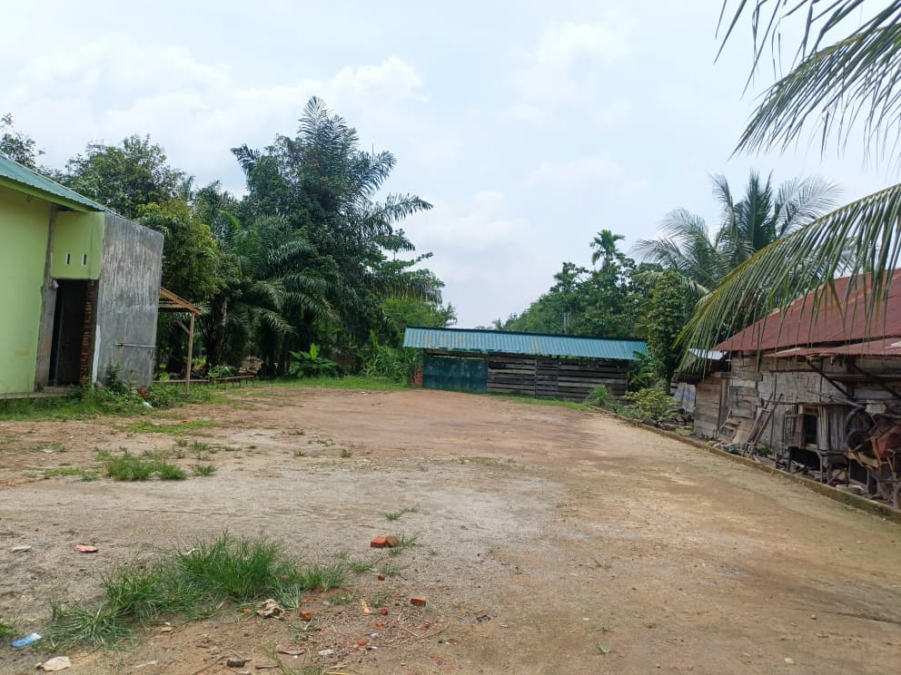
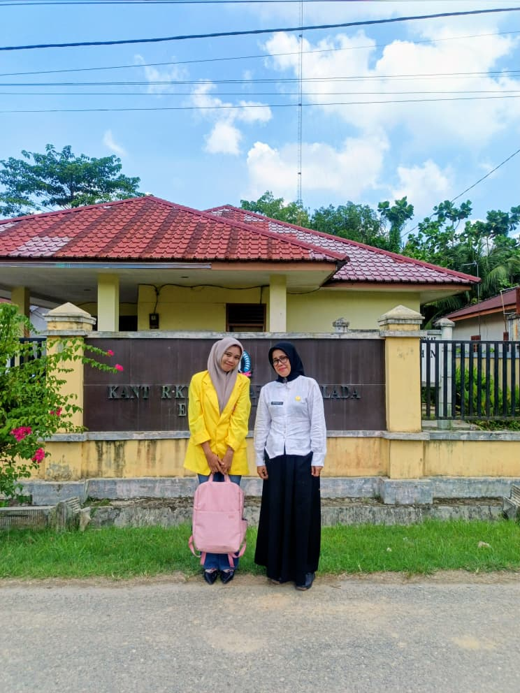
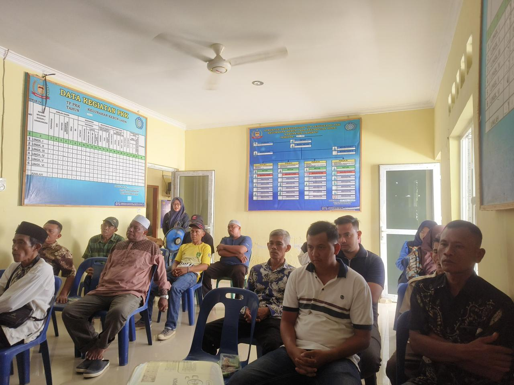
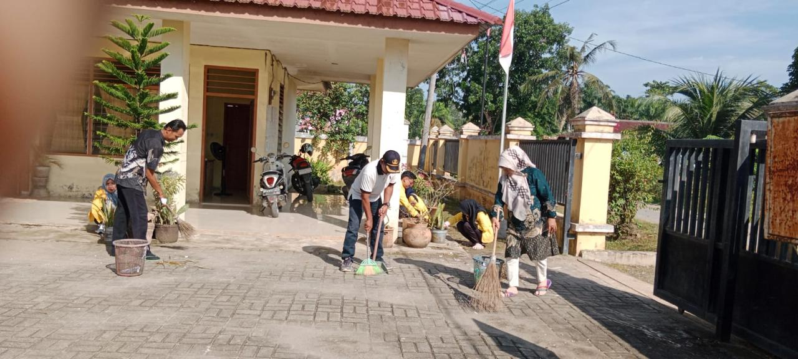
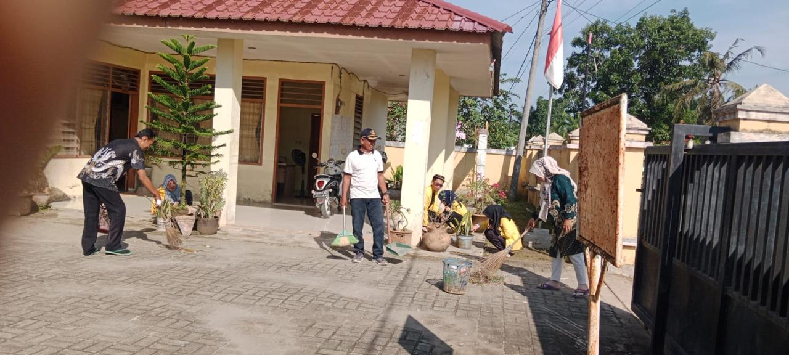
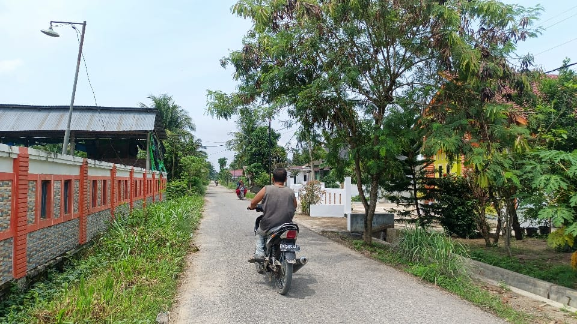

Dokumentasi kegiatan dan suasana Kelurahan Kebun Lada

Kantor Kelurahan
Kantor Kelurahan Kebun Lada yang elegan dengan pelayanan prima.

Gapura Selamat Datang
Gapura sebagai simbol penyambutan bagi pengunjung Kelurahan Kebun Lada.

Masjid Nurul Iman
Sarana ibadah bagi warga Kelurahan Kebun Lada.

Lapangan Desa
Lapangan yang digunakan untuk berbagai kegiatan warga.

Ibu Lurah Sumariatik, S.E
Lurah Kebun Lada periode 2024-2029.

Pembagian BLT
Antrian warga untuk pengambilan Bantuan Langsung Tunai.

Gotong Royong
Warga bergotong royong menjaga kebersihan lingkungan.

Kunjungan Mahasiswa
Mahasiswa ITB Indonesia melakukan kunjungan dan aksi bersih-bersih.

Suasana Kelurahan
Pemandangan suasana Kelurahan Kebun Lada yang asri dan nyaman.